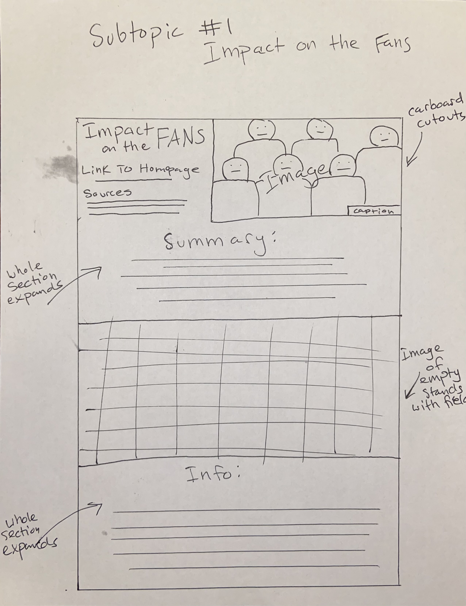
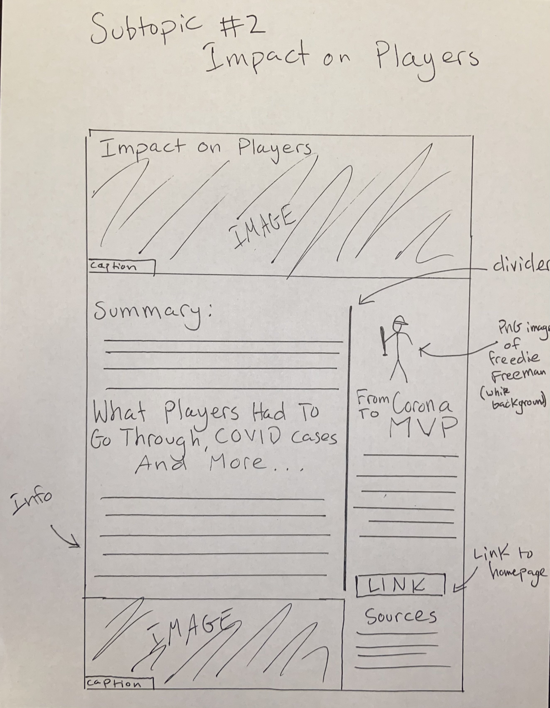
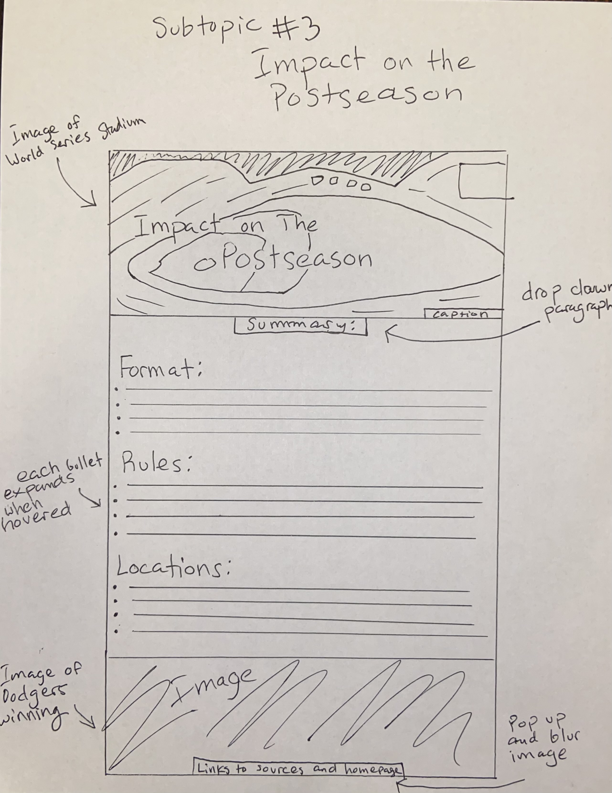
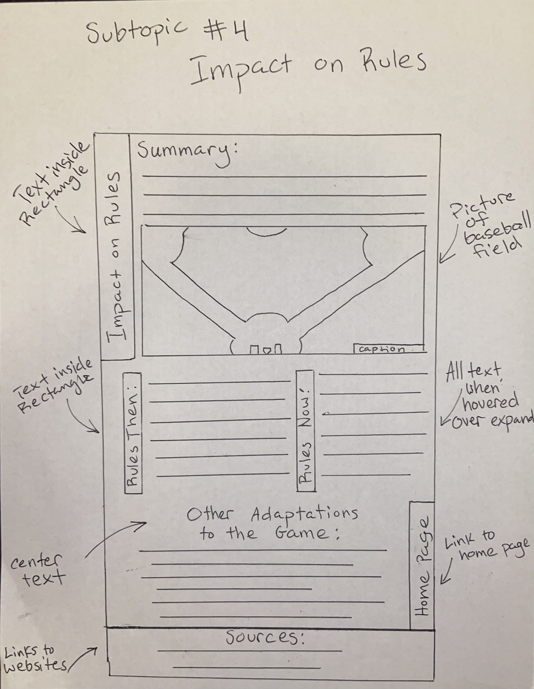
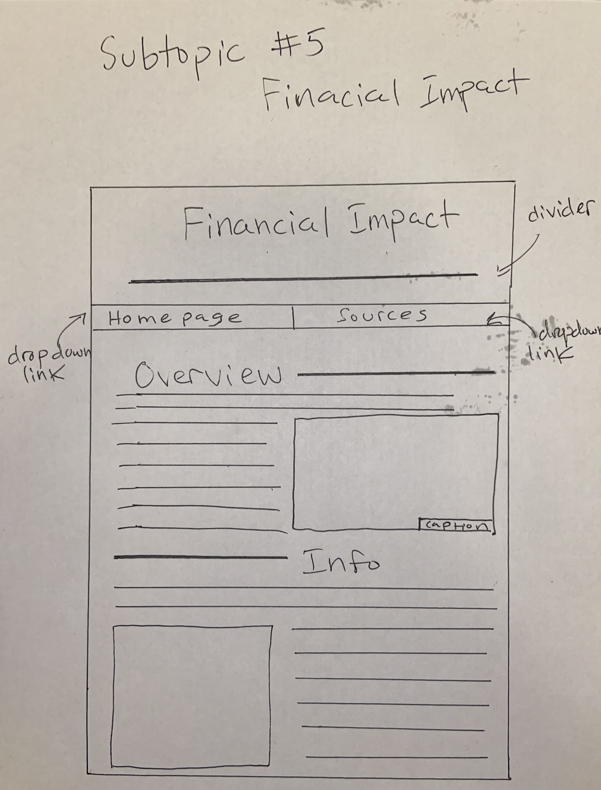

Challenges
The challenge of this lab was to make 3 detailed sketches of how we might want out webpages to look. I did 5, one for each of the
subtopics we have come up with. I included the main elements we decided to include in all of our webpage designs. A title, at least one image, a summary, a secion of
information, a link to our home our homepage. Speficically how it will be layed out will be changed depending on the page but we plan to keep the same key elements,
fonts, and styles.
Problems
I honestly didn't have any problems with this lab. I am good at sketching and coming up with good ideas involving layout options source
creating these sketches was easy for me. I kind of just made more detailed and larger versions of my origional sketches so I didn't really have to make any new designs.
Results
I am very pleased with the results of my sketches. I could actually see these looking clean and realistic as a perfessional-looking webpage.
They have an organized look to it and are simple. However they still give enough room to display all the information we need.
Feedback
Which sketches work and inspire the team?
The #3 Subtopic (Impact on Players) inspires the team because it gives a great sense of organization and structure opportunites.
It gives us a good model on how we want the style to look like.
Which ones are moving in a direction that the team wants to go?
All of my designs are moving in a good direction. A couple of them are questionable but most of the will be strong contendors for what some of our webpages will look like.
What could be improved or developed?
Incorporate more dropdowns and functions. Some could be less cluttered but it will improve once sketched in more detail.




